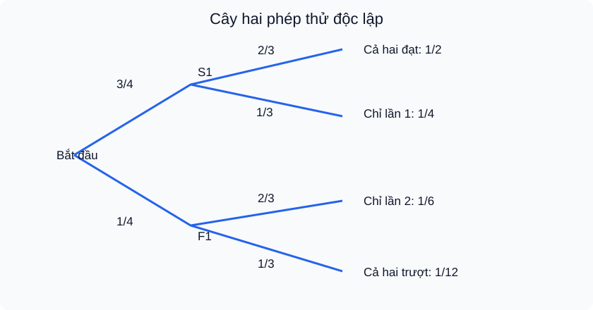

Bài 30. Công thức nhân xác suất cho hai biến cố độc lập
TOÁN 11 · CHƯƠNG VIII · KẾT NỐI TRI THỨC · TẬP HAI
Khi hai biến cố không ảnh hưởng lẫn nhau, tính xác suất để cả hai cùng xảy ra như thế nào? Dùng số liệu ra sao để kiểm tra chúng có độc lập không?
1. Khám phá kiến thức
Ở Bài 29, em đã học cách tính xác suất của một biến cố hợp: điều kiện này hoặc điều kiện kia xảy ra. Bài này hỏi một câu khác: cả hai điều kiện cùng xảy ra có cơ hội bao nhiêu? Chẳng hạn, hai vận động viên thi đấu riêng biệt, mỗi người có một xác suất giành huy chương. Muốn dự đoán cơ hội cả hai cùng đoạt huy chương, ta không thể đơn giản cộng hai xác suất.
1.1. Công thức nhân xác suất cho hai biến cố độc lập
Hãy xét hai hộp bóng riêng biệt. Hộp thứ nhất có \(6\) bóng trắng và \(4\) bóng đen; hộp thứ hai có \(1\) bóng trắng và \(7\) bóng đen. Long lấy đều một bóng từ hộp thứ nhất, Hải lấy đều một bóng từ hộp thứ hai. Ta gọi \(A\) là “Long lấy bóng trắng”, \(B\) là “Hải lấy bóng đen”.
Xác suất của \(A\) là \(6/10\), của \(B\) là \(7/8\). Giả sử Long và Hải chọn ngẫu nhiên độc lập, mỗi bóng trong hộp của mình có cơ hội như nhau. Khi đó kết quả lấy bóng của Long không thay đổi xác suất lấy bóng của Hải; hai biến cố này độc lập.
Để biết cơ hội cả hai cùng đạt yêu cầu, ta có thể tưởng tượng một bảng gồm mọi cặp bóng có thể lấy: mỗi bóng trong hộp thứ nhất ghép với mỗi bóng trong hộp thứ hai. Có tất cả \(10\cdot8=80\) cặp đồng khả năng; trong đó \(6\cdot7=42\) cặp gồm bóng trắng ở hộp thứ nhất và bóng đen ở hộp thứ hai. Vì vậy
Ở đây \(AB\) là cách SGK kí hiệu biến cố giao \(A\cap B\), tức cả hai sự kiện cùng xảy ra. Phép nhân xuất hiện vì lựa chọn trong hộp thứ hai có cùng \(7\) khả năng phù hợp trên \(8\) khả năng, dù hộp thứ nhất cho kết quả nào. Ta đã đếm hai lựa chọn độc lập, không phải nhân tùy tiện vì thấy chữ “và”.
Có thể theo dõi ý tưởng ấy bằng sơ đồ hình cây. Với một mô hình khác, giả sử phép thử thứ nhất thành công với xác suất \(3/4\), phép thử thứ hai thành công với xác suất \(2/3\), và hai phép thử độc lập. Từ mỗi kết quả ở lượt thứ nhất, cơ hội thành công ở lượt thứ hai vẫn là \(2/3\).

Bốn lá lần lượt là: cả hai đạt \(1/2\), chỉ lượt một đạt \(1/4\), chỉ lượt hai đạt \(1/6\), cả hai trượt \(1/12\). Vì các lá là những trường hợp xung khắc, xác suất đúng một lượt đạt là \(1/4+1/6=5/12\). Nếu chỉ hỏi “ít nhất một lượt thành công”, có thể cộng ba trường hợp thuận lợi trên cây. Cách ngắn hơn là xét biến cố đối “cả hai cùng thất bại”: \(1-(1/4)(1/3)=11/12\). Cách lấy bù này dựa vào việc các biến cố đối của hai phép thử độc lập cũng độc lập.
Vận dụng. Hai cảm biến hoạt động độc lập; xác suất mỗi cảm biến phát hiện sự cố lần lượt là \(0{,}8\) và \(0{,}7\). Tính xác suất cả hai cùng phát hiện và xác suất ít nhất một cảm biến phát hiện. Hãy thử nêu biến cố đối của yêu cầu thứ hai.
Đối chiếu
Lời giải. Gọi \(A,B\) là biến cố từng cảm biến phát hiện. Vì độc lập, \(P(AB)=0{,}8\cdot0{,}7=0{,}56\). Biến cố đối của “ít nhất một phát hiện” là “cả hai không phát hiện”. Hai xác suất không phát hiện là \(0{,}2\) và \(0{,}3\), nên
Kiểm lại: \(0{,}94\geq0{,}8\) và \(0{,}94\leq1\), hợp lí. Cũng có \(0{,}8+0{,}7-0{,}56=0{,}94\) theo công thức cộng.
Kiểm lỗi: Nếu kết quả của “ít nhất một” là \(0{,}56\), em đã tính giao thay vì hợp. Hãy viết câu “không cảm biến nào phát hiện” trước khi dùng biến cố đối.
1.2. Vận dụng
Công thức nhân không chỉ giúp tính một xác suất. Nó còn giúp kiểm tra một giả thiết độc lập. Giả sử \(P(A)=0{,}5\), \(P(B)=0{,}4\). Nếu \(A,B\) độc lập thì phải có \(P(AB)=0{,}5\cdot0{,}4=0{,}2\). Nhưng nếu số liệu thực tế cho \(P(AB)=0{,}3\), hai biến cố không độc lập. Như vậy, khi đã biết xác suất từng biến cố và giao của chúng, ta có thể so sánh xác suất giao quan sát được với tích cần có nếu độc lập.
Hãy thử đọc một bảng khảo sát: \(100\) người, trong đó \(40\) người tham gia câu lạc bộ A, \(30\) người tham gia câu lạc bộ B, \(20\) người tham gia cả hai. Nếu chọn đều một người, \(P(A)=40/100=0{,}4\), \(P(B)=30/100=0{,}3\), nhưng \(P(AB)=20/100=0{,}2\), khác \(0{,}4\cdot0{,}3=0{,}12\). Trong mô hình dữ liệu ấy, việc tham gia A và tham gia B không độc lập.
Khi làm việc với bảng số liệu khảo sát, cần thêm một điều quan trọng: phát hiện hai biến cố không độc lập không tự chứng minh biến cố này là nguyên nhân của biến cố kia. Hai sự việc có thể có liên hệ do nhiều yếu tố khác; phạm vi và cách chọn mẫu cũng ảnh hưởng việc suy rộng kết quả. Kết luận toán học đúng ở đây là không độc lập theo mô hình số liệu đã cho.
Vận dụng. Một khảo sát \(200\) người ghi nhận \(90\) người dùng phương tiện A, \(80\) người dùng phương tiện B và \(50\) người dùng cả hai. Chọn đều một người trong khảo sát. Kiểm tra hai biến cố “dùng A” và “dùng B” có độc lập không; giải thích ý nghĩa phép so sánh.
Đối chiếu
Lời giải. Đặt \(A\): “dùng phương tiện A”, \(B\): “dùng phương tiện B”. Ta có \(P(A)=90/200=0{,}45\), \(P(B)=80/200=0{,}4\), \(P(AB)=50/200=0{,}25\). Nếu độc lập, tích phải là \(0{,}45\cdot0{,}4=0{,}18\). Vì \(0{,}25\ne0{,}18\), hai biến cố không độc lập trong mô hình đã cho.
Kiểm lỗi: Nếu kết luận “dùng A làm người ta dùng B”, đó là suy luận nhân quả chưa được dữ kiện chứng minh. Phép kiểm độc lập không xác định nguyên nhân.
2. Kiến thức SGK
2.1. Công thức nhân xác suất cho hai biến cố độc lập
Hai biến cố \(A,B\) độc lập nếu việc xảy ra hoặc không xảy ra của biến cố này không làm thay đổi xác suất của biến cố kia. Trong bài toán, tính độc lập phải có căn cứ từ mô hình hoặc số liệu, không suy ra chỉ vì các biến cố khác tên.
Nếu \(A,B\) độc lập thì \(\displaystyle P(AB)=P(A)\,P(B)\), với \(AB=A\cap B\) là biến cố cả hai cùng xảy ra.
Cách nhận biết cần thiết: Xác định hai biến cố và phép thử; kiểm chúng độc lập từ cách tiến hành hoặc các xác suất. Khi dữ kiện đã cho đủ \(P(A)\), \(P(B)\), \(P(AB)\), nếu \(P(AB)\ne P(A)P(B)\) thì không độc lập. Ngược lại, khi đẳng thức đúng cho hai biến cố, đó là điều kiện xác suất đặc trưng của tính độc lập. Không được lấy \(P(A)P(B)\) làm đáp số nếu chưa xác nhận tính độc lập.
Nếu \(A,B\) độc lập thì \(A,\overline B\); \(\overline A,B\); và \(\overline A,\overline B\) cũng độc lập. Vì thế, khi \(P(A)=a\), \(P(B)=b\), xác suất cả hai không xảy ra là \((1-a)(1-b)\), và xác suất ít nhất một xảy ra là \(1-(1-a)(1-b)\).
Lưu ý: Hai biến cố xung khắc có xác suất dương thì không độc lập: giao có xác suất \(0\) trong khi tích hai xác suất riêng lớn hơn \(0\). Nếu \(P(A)=0\), thì \(P(AB)=0=P(A)P(B)\) với mọi \(B\); theo điều kiện tích, hai biến cố độc lập. Trường hợp \(P(B)=0\) cũng tương tự. Không coi “độc lập” là “không thể xảy ra đồng thời”.
2.2. Vận dụng
Kiểm tính độc lập từ dữ liệu: Khi quan sát một nhóm \(N\) đối tượng được chọn đều theo mô hình, giả sử \(n_A\) đối tượng thuộc \(A\), \(n_B\) thuộc \(B\), \(n_{AB}\) thuộc cả hai. Ta tính
rồi so sánh \(P(AB)\) với \(P(A)P(B)\). Dữ kiện khác nhau có thể phản ánh sự phụ thuộc thống kê trong nhóm; muốn kết luận một biến cố gây ra biến cố kia phải có thêm căn cứ ngoài phép so sánh này.
Ví dụ minh họa. Khảo sát \(100\) người cho biết \(40\) người thuộc A, \(30\) người thuộc B và \(20\) người thuộc cả hai. Ta có \(P(AB)=0{,}20\), khác \(P(A)P(B)=0{,}4\cdot0{,}3=0{,}12\). Vì vậy \(A,B\) không độc lập trong mô hình thống kê này.
Tự kiểm phát biểu: Nói “khác tích nên không độc lập” là kiểm tra tính độc lập. Nói “A gây ra B” từ riêng bảng tần số là vượt quá điều được chứng minh. Đây là hai kết luận hoàn toàn khác nhau.
3. Ví dụ
3.1. Hai hộp bóng và biến cố giao
Đề bài. Hộp I có \(6\) bóng trắng và \(4\) bóng đen; hộp II có \(1\) bóng trắng và \(7\) bóng đen. Mỗi bạn lấy đều một bóng từ một hộp khác nhau. Tính xác suất Long lấy trắng và Hải lấy đen.
Phân tích: Hai hộp tách biệt nên kết quả rút ở hộp I không đổi thành phần hộp II. Hai biến cố độc lập. Đếm hai cặp kết quả hoặc nhân hai xác suất đều được.
Lời giải. Gọi \(A\): “Long lấy trắng”; \(B\): “Hải lấy đen”. Có \(P(A)=6/10=3/5\), \(P(B)=7/8\). Do độc lập, \(P(AB)=(3/5)(7/8)=21/40\). Có thể kiểm bằng đếm cặp bóng: \(6\cdot7=42\) kết quả thuận lợi trên \(10\cdot8=80\) kết quả đồng khả năng, nên \(42/80=21/40\).
Kiểm lại: \(21/40=0{,}525\) không vượt \(P(A)=0{,}6\) và \(P(B)=0{,}875\); phù hợp vì giao là tập con của mỗi biến cố.
3.2. Hai vận động viên và cây xác suất
Đề bài. Giả sử hai vận động viên thi đấu độc lập, xác suất người thứ nhất giành huy chương là \(0{,}8\), người thứ hai là \(0{,}9\). Tính xác suất: (a) cả hai đạt huy chương; (b) cả hai không đạt; (c) chỉ người thứ nhất đạt; (d) chỉ người thứ hai đạt.
Phân tích: Mỗi người có hai khả năng đạt/không đạt. Hai biến cố độc lập nên các biến cố đối cũng độc lập. Bốn trường hợp là bốn lá của một sơ đồ cây.
Lời giải. Gọi \(A,B\) là biến cố từng người đạt. \(P(\overline A)=0{,}2\), \(P(\overline B)=0{,}1\). (a) \(P(AB)=0{,}8\cdot0{,}9=0{,}72\). (b) \(P(\overline A\,\overline B)=0{,}2\cdot0{,}1=0{,}02\). (c) \(P(A\overline B)=0{,}8\cdot0{,}1=0{,}08\). (d) \(P(\overline A B)=0{,}2\cdot0{,}9=0{,}18\).
Kiểm lại: Bốn khả năng không giao nhau và bao phủ mọi kết quả: \(0{,}72+0{,}02+0{,}08+0{,}18=1\).
3.3. Ít nhất một hạt giống nảy mầm
Đề bài. Hạt giống loại \(A\) có xác suất nảy mầm \(0{,}92\), hạt giống loại \(B\) có xác suất nảy mầm \(0{,}88\). Giả sử sự nảy mầm của hai hạt độc lập. Tính xác suất: (a) A nảy mầm, B không nảy mầm; (b) A không nảy mầm, B nảy mầm; (c) ít nhất một hạt nảy mầm.
Phân tích: Các xác suất không nảy mầm là \(0{,}08\) và \(0{,}12\). Hai ý đầu là giao; ý cuối thuận tiện tính bằng biến cố đối “cả hai đều không nảy mầm”.
Lời giải. (a) \(0{,}92\cdot0{,}12=0{,}1104\). (b) \(0{,}08\cdot0{,}88=0{,}0704\). (c) \(1-(0{,}08\cdot0{,}12)=1-0{,}0096=0{,}9904\).
Kiểm lại: Xác suất cả hai đều nảy mầm là \(0{,}92\cdot0{,}88=0{,}8096\). Bốn khả năng \(0{,}1104+0{,}0704+0{,}8096+0{,}0096=1\).
3.4. Kiểm tra hai biến cố có độc lập không
Đề bài. Cho hai biến cố \(M,N\) với \(P(M)=0{,}6\), \(P(N)=0{,}5\). Xét hai tình huống riêng: (a) \(P(MN)=0{,}3\); (b) \(P(MN)=0{,}2\). Trong mỗi tình huống, chúng độc lập hay không?
Phân tích: Vì đã biết \(P(MN)\), không cần đoán từ tên biến cố. So sánh trực tiếp với \(P(M)P(N)\).
Lời giải. \(P(M)P(N)=0{,}6\cdot0{,}5=0{,}3\). (a) \(P(MN)=0{,}3\) bằng tích, nên \(M,N\) độc lập. (b) \(P(MN)=0{,}2\ne0{,}3\), nên \(M,N\) không độc lập.
Kiểm lại: Cả \(0{,}3\) và \(0{,}2\) đều không vượt \(\min\{0{,}6;0{,}5\}=0{,}5\), nên hai tình huống có thể xảy ra trong mô hình xác suất; việc kết luận độc lập vẫn khác nhau.
3.5. Bảng số liệu và sự phụ thuộc thống kê
Đề bài. Một khảo sát \(5\,000\) người đàn ông được phân thành bốn nhóm theo hai tiêu chí: có nghiện thuốc lá hay không và có viêm phổi hay không. Kết quả:
| Nhóm | Viêm phổi | Không viêm phổi |
|---|---|---|
| Nghiện thuốc lá | \(752\) | \(1\,236\) |
| Không nghiện thuốc lá | \(575\) | \(2\,437\) |
Chọn đều một người trong nhóm khảo sát. Kiểm tra hai biến cố “nghiện thuốc lá” (\(S\)) và “bị viêm phổi” (\(V\)) có độc lập theo số liệu không. Có thể từ kết quả ấy tự kết luận một biến cố gây ra biến cố kia không?
Phân tích: Tính \(P(S)\) bằng tổng hàng, \(P(V)\) bằng tổng cột, \(P(SV)\) bằng ô giao. So sánh \(P(SV)\) với \(P(S)P(V)\). Câu hỏi về nguyên nhân đòi thông tin khác ngoài bảng.
Lời giải. Có \(752+1236=1988\) người nghiện thuốc lá và \(752+575=1327\) người viêm phổi. Do đó \(P(S)=1988/5000=0{,}3976\), \(P(V)=1327/5000=0{,}2654\), \(P(SV)=752/5000=0{,}1504\). Nếu độc lập thì tích phải là \(0{,}3976\cdot0{,}2654=0{,}10552304\), khác \(0{,}1504\). Vậy hai biến cố không độc lập trong mô hình số liệu khảo sát. Chưa thể chỉ từ bảng này khẳng định một biến cố là nguyên nhân của biến cố kia.
Kiểm lại: \(752+1236+575+2437=5000\). Phần giao có xác suất \(0{,}1504\), nhỏ hơn từng xác suất biên \(0{,}3976\) và \(0{,}2654\), đúng tính chất tập con.
3.6. Không thể nhân khi lấy vật không hoàn lại
Đề bài. Hộp có \(3\) bi đỏ và \(2\) bi xanh giống nhau; rút liên tiếp hai bi không trả lại. Gọi \(A\): “lần đầu lấy đỏ” và \(B\): “lần hai lấy đỏ”. Xét tính độc lập của \(A,B\), rồi tính xác suất hai lần đều đỏ bằng cách đếm các cặp có thứ tự.
Phân tích: Nếu lần đầu lấy đỏ, thành phần hộp đổi. Không được lấy \(P(A)P(B)\) chỉ vì có hai lượt. Có \(5\cdot4\) cặp bi có thứ tự đồng khả năng, trong đó \(3\cdot2\) cặp đều đỏ.
Lời giải. \(P(A)=3/5\). Nếu đã lấy đỏ ở lượt đầu, xác suất lượt hai đỏ là \(2/4=1/2\); trong khi khi chưa biết lượt đầu, xác suất bi lượt hai đỏ là \(3/5\) (do mỗi bi có cơ hội như nhau ở vị trí thứ hai). Hai cơ hội khác nhau nên \(A,B\) không độc lập. Xét các cặp bi có thứ tự, \(P(AB)=(3\cdot2)/(5\cdot4)=6/20=3/10\).
Kiểm lại: Nếu dùng sai công thức độc lập sẽ ra \((3/5)(3/5)=9/25\), khác \(3/10\). Số đếm \((3\cdot2)/(5\cdot4)\) đúng nhưng không được viện dẫn công thức nhân cho hai biến cố độc lập để biện minh.
3.7. Dữ liệu thực tế: kiểm tra độc lập mà không suy nhân quả
Đề bài. Trong một dữ liệu về tai nạn, tỉ lệ tử vong là \(0{,}37\%\), tỉ lệ không thắt dây an toàn là \(29\%\), và tỉ lệ vừa không thắt dây an toàn vừa tử vong là \(0{,}28\%\). Xét hai biến cố \(D\): “tử vong”, \(K\): “không thắt dây an toàn”. Kiểm tra chúng có độc lập theo số liệu không.
Phân tích: Chuyển đúng đơn vị phần trăm: \(0{,}37\%=0{,}0037\), \(29\%=0{,}29\), \(0{,}28\%=0{,}0028\). Nếu độc lập thì giao phải bằng tích hai xác suất riêng.
Lời giải. Ta có \(P(D)P(K)=0{,}0037\cdot0{,}29=0{,}001073\), tương đương \(0{,}1073\%\). Nhưng dữ liệu cho \(P(DK)=0{,}0028=0{,}28\%\). Vì \(0{,}0028\ne0{,}001073\), hai biến cố không độc lập trong mô hình khảo sát.
Kiểm lại: \(0{,}28\%<0{,}37\%\), đúng vì giao là tập con của biến cố tử vong. Kết luận không độc lập không tự nó chứng minh quan hệ nguyên nhân–kết quả; cần nghiên cứu bổ sung để xác định nguyên nhân.
4. Lỗi thường gặp và cách tự khắc phục
Mở từng mục để xem sai ở đâu, vì sao sai và cách sửa.
4.1. Nhân xác suất khi chưa có điều kiện độc lập
Sai ở đâu: Thấy đề có “cả hai”, lập tức viết \(P(AB)=P(A)P(B)\), dù hai sự kiện ảnh hưởng nhau.
Vì sao sai: Công thức nhân đơn giản áp dụng cho hai biến cố độc lập, không cho mọi giao.
Cách sửa: Trước khi nhân, ghi rõ căn cứ độc lập từ mô hình hoặc dữ liệu. Với hai lần rút không trả lại, kiểm lại thành phần hộp sau lần đầu.
4.2. Nhầm “cả hai” với “ít nhất một”
Sai ở đâu: Khi đề hỏi xác suất ít nhất một thiết bị hoạt động, lấy tích hai xác suất hoạt động.
Vì sao sai: Tích cho giao (cả hai), không phải hợp (ít nhất một).
Cách sửa: Với hai biến cố độc lập, “ít nhất một” có xác suất \(1-(1-P(A))(1-P(B))\), hoặc dùng công thức cộng của Bài 29.
4.3. Cộng xác suất trên một đường của sơ đồ cây
Sai ở đâu: Lấy \(3/4+2/3\) để tính xác suất hai lần đều đạt.
Vì sao sai: Mỗi đường từ gốc đến lá là sự kiện đồng thời của hai phép thử; trong mô hình độc lập, xác suất của nó là tích các nhánh. Cộng chỉ dùng cho những đường kết quả loại trừ nhau khi cần lấy hợp.
Cách sửa: Khoanh một đường cụ thể, nhân các nhánh rồi cộng các lá cần tìm. Kiểm tổng bốn lá bằng \(1\).
4.4. Đồng nhất xung khắc với độc lập
Sai ở đâu: Cho rằng “không thể cùng xảy ra” nghĩa là “không ảnh hưởng nhau”.
Vì sao sai: Với \(P(A),P(B)>0\), xung khắc cho \(P(AB)=0\) nhưng tích \(P(A)P(B)>0\).
Cách sửa: Hỏi riêng hai câu: “Có thể đồng thời xảy ra không?” và “Biết một biến cố có làm thay đổi cơ hội của biến cố kia không?”.
4.5. Quên lấy biến cố đối
Sai ở đâu: Hai lần thử độc lập có xác suất thành công \(0{,}7\) và \(0{,}8\), rồi lấy \(1-0{,}7\cdot0{,}8\) làm xác suất “ít nhất một thành công”.
Vì sao sai: \(1-P(AB)\) nghĩa là không phải cả hai cùng thành công, vẫn chứa trường hợp cả hai thất bại. Đó không phải biến cố “ít nhất một thành công”.
Cách sửa: Biến cố đối của “ít nhất một thành công” là “cả hai đều thất bại”, nên \(1-(0{,}3)(0{,}2)=0{,}94\).
4.6. Đổi sai phần trăm khi kiểm độc lập
Sai ở đâu: Xem \(0{,}37\%\) bằng \(0{,}37\), rồi so \(0{,}37\cdot0{,}29\) với \(0{,}28\%\).
Vì sao sai: \(0{,}37\%=0{,}0037\), còn \(0{,}37\) là \(37\%\), gấp \(100\) lần.
Cách sửa: Đổi tất cả về dạng thập phân trước: \(0{,}0037\cdot0{,}29=0{,}001073\); so với \(0{,}0028\).
4.7. Coi liên hệ thống kê là bằng chứng nguyên nhân
Sai ở đâu: Thấy \(P(AB)\ne P(A)P(B)\) rồi kết luận “A gây ra B”.
Vì sao sai: Phép kiểm chứng minh không độc lập trong mô hình số liệu, không phân biệt được nguyên nhân trực tiếp, yếu tố chung hay sai lệch chọn mẫu.
Cách sửa: Kết luận đúng phạm vi: “Hai biến cố có liên hệ thống kê/không độc lập trong nhóm quan sát”. Chỉ bàn đến quan hệ nhân quả khi có thêm thiết kế nghiên cứu và chứng cứ thích hợp.